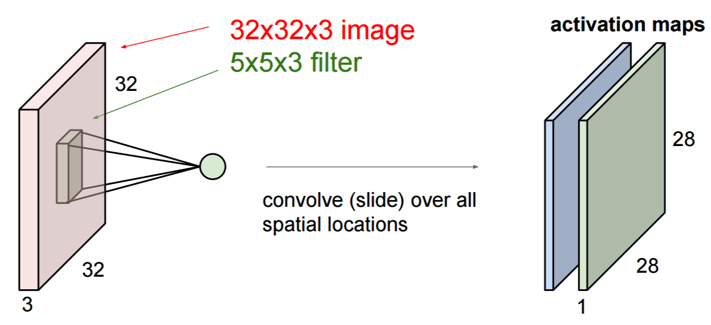

Many as One
매니코어SW 지정과제 순차처리 합성곱 필터 알고리즘을 병렬처리 알고리즘으로 재구현 했습니다.
해당 모듈은 여럿이 모여 하나 프로젝트에 이미지 모듈에 추가하고 지속적 개선을 진행합니다.
Many as One (cont’d)
여럿이 모여 하나는 인공 신경망 코어 프레임워크를 구현합니다.
일반적인 Python 신경망 프레임워크 + numpy (GPU 컴퓨팅 + 싱글스레드 CPU와 UMA 기반)와 차이점이 있습니다.
Many as One (cont’d)
여럿이 모여 하나는 매니코어 병렬 처리에 대응하기위해
- C++17, C++20에서 추가하고 있는 TBB(Thread Building Blocks)기반의 표준을 활용합니다.
- SYCL 표준 기반 텐서를 활용하여 GPU, FPGA 등을 활용한 범용 이기종 컴퓨팅이 가능합니다.

Many as One
여럿이 모여 하나는 컨테이너 기반으로 네트워크 분산 처리를 구현합니다.- Apche Arrow 포맷의 학습 데이터를 무한 확장 가능하여 빠른 처리와 지연시간을 최소화할 수 있습니다.
이미지 합성곱 필터
- filter.hpp에서 편향을 가진 3차원 합성곱 커널을 구현합니다.
- 병렬 처리에 최적화한 벡터 기반 텐서를 할당 및 병렬 정규화 처리를 정의합니다.
이미지 합성곱 필터 (cont’d)
- conv2d_layer.hpp에서 합성곱 레이어를 구현합니다. stride, zero-padding 등을 필터에 적용합니다.
이미지 합성곱 필터 (cont’d)

- conv2d는 3-D data volume과 필터 벡터를 인자로 받습니다. 하나의 filter는 activation map을 생성합니다. 예를 들어 3 x 3 x 3 필터를 512px x 512px x 3 이미지에 적용하면 (1 stride, 1 zero padding) 512px x 512px 2-D 레이어를 출력합니다.
이미지 합성곱 필터
- 3개의 이미지에 대해서 배치작업을 실행하면 3개의 필터를 생성합니다. 현재 filter.txt 기반의 예제는 각각의 RGB 컬러 채널에 대해서 에지 디텍터 역할을 합니다.
반복자를 통한 병렬 실행 정책
- C++17, C++20의 표준 데이터 타입 컨테이너에 대한 반복자std::execution를 활용하여 병렬 실행을 활용합니다.
- 기존 C 언어 기반의 자료형을 모던 C++ 벡터 & 연산자 오버로딩으로 구현하였습니다.
행렬 단위 병렬 처리 공통화
- 행렬은 2차원 벡터를 이용합니다.
- 합성곱 모듈에서
kernel처리에 활용합니다.
template <typename F, typename T>
T trans_matrix(F f, T &m) {
transform(std::execution::par,
m.begin(), m.end(),
m.begin(), [f](auto v) -> auto {
return f(v);
});
return m;
}
텐서 단위 병렬 처리 공통화
- 텐서 단위의 병렬 처리는 3차원 벡터를 이용하고 병렬 실행 정책을 사용합니다.
- 합성곱 모듈에서는
filter,conv2d처리에 활용합니다.
template <typename F, typename T>
T trans_tensor(F f, T &t) {
transform(std::execution::par,
t.begin(), t.end(),
t.begin(), [f](auto m) -> auto {
return trans_matrix(f, m);
});
return t;
}
이미지 처리 결과 (cont’d)
| Input images | Output images |
|---|---|
 |
이미지 처리 결과 (cont’d)
| Input images | Output images |
|---|---|
 |
 |
이미지 처리 결과
| Input images | Output images |
|---|---|
 |